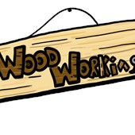
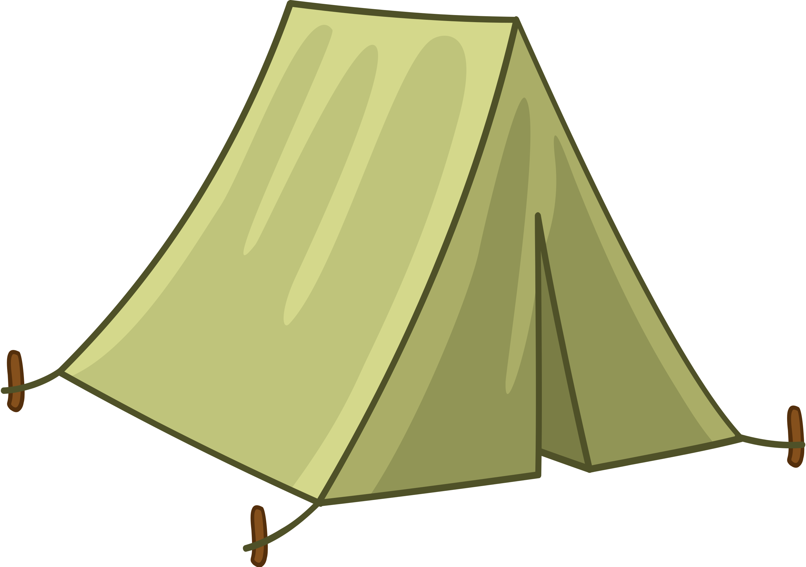
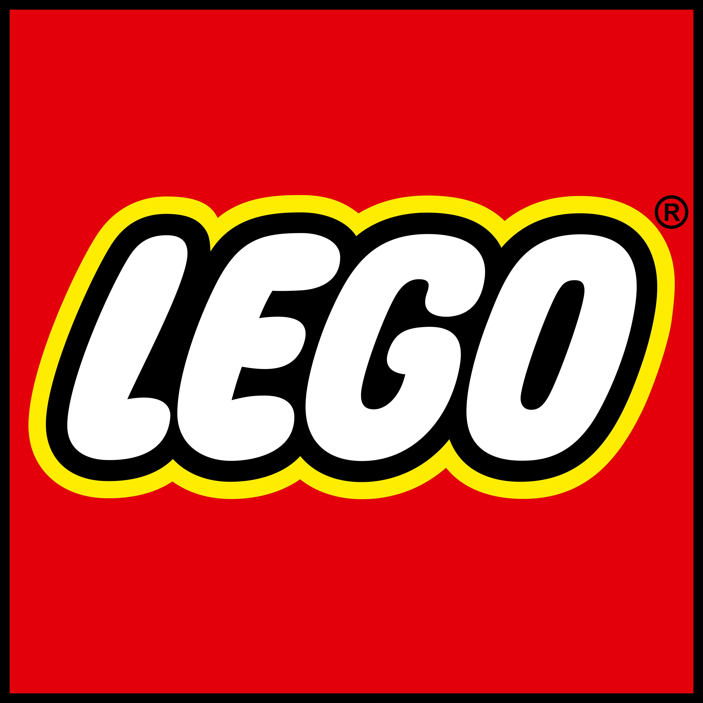
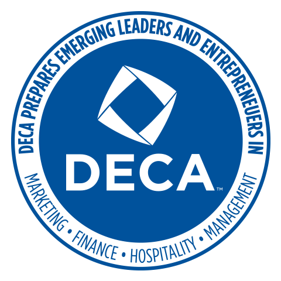

The work, service, and leadership behind the analyst.
Business Analytics Intern — Applying Knowledge
June 2024 – August 2026
- Built an Excel break-even model comparing cloud vs. owned GPU compute, using sensitivity analysis to guide procurement.
- Evaluated vector databases (pgvector, Pinecone, Chroma) on cost, capability, and compliance in a weighted decision matrix.
- Built a RACI responsibility matrix mapping task ownership across project roles to resolve accountability gaps.
- Distilled technical AI-tooling research into concise, decision-ready briefings for non-technical stakeholders.
Excel Modeling
Sensitivity Analysis
Vendor Evaluation
RACI
Technical Writing
Stakeholder Communication
President & Finance Officer — Woodworking at IU
October 2023 – Present
- Lead a 254-member club as both President and Finance Officer, owning the operations and the budget — which keeps me in spreadsheets constantly, tracking spending and forecasting so projects actually get funded.
- Run instructional sessions that teach members real woodworking technique, from tool safety to prepping and finishing, breaking complex processes into steps people can follow.
- Manage long-term builds with hard deadlines, applying project-management discipline to keep multi-week projects on schedule and finished on time.
- Spearheaded the effort to renovate and secure a dedicated workshop, giving all 254 members a functional, permanent space to work in.
Finance & Budgeting
Project Management
Operations
Leadership

Team Counselor — Camp Khoodareh
Summers 2025 – 2026
- Guided a team of six campers through creating and performing an engaging skit, leaning on collaboration and creativity while reinforcing the camp's core values.
- Mentored the group through service projects, encouraging responsibility, teamwork, and a real sense of contributing to the local community.
- Stepped in early when friction came up, opening honest conversations between campers to resolve conflicts before they could derail the team.
- Got steady reps at the part of any job that isn't on a syllabus — reading people, communicating clearly under pressure, and keeping everyone aligned on a shared goal.
Leadership
Conflict Resolution
Team Collaboration
Mentorship

Director of External Relations — Luddy Consulting Association
October 2024 – December 2025
- Managed relationships with 10+ external partners, tracking every contact and follow-up and turning company interest into concrete opportunities members could actually use.
- Connected 100+ members with consulting professionals through outreach and events I coordinated, helping students get a real window into the industry.
- Coordinated events with industry representatives end to end — logistics, scheduling, and communication — which meant keeping a lot of moving pieces organized at once.
- Sharpened the operational habits (stay organized, follow through, manage stakeholders) that carry directly into running a data project from start to finish.
Stakeholder Management
Outreach
Event Coordination
Networking
Brick Specialist
Summers 2024 – 2025
- Processed over $100,000 in sales transactions with consistent accuracy, handling everything from quick single-item purchases to large custom orders during peak holiday and weekend rushes.
- Built genuine rapport with more than 1,150 guests — the kind of substantive conversations that turned browsers into buyers and earned repeat positive satisfaction surveys.
- Mastered the details of over 150 different products well enough to quickly match a customer to exactly what they needed, making the whole shopping experience faster and more pleasant.
- Got my first real practice at spotting patterns in what sold and how stock moved across the floor — the same instinct for reading data that I now bring to dashboards.
Customer Service
POS Transactions
Visual Merchandising
Communication

Co-Founder & Head of Marketing — Lens and Light Explorers
September 2023 – May 2025
- Co-founded a photography club from nothing, including authoring an 8-page constitution covering member rights, operating policies, and governance to give it real structure and credibility.
- Led marketing and produced the visual content — graphic design and editing — that grew the club's reach and presence.
- Drove a 15% increase in traffic by paying attention to what content actually landed and adjusting based on the engagement numbers rather than guessing.
- Got my first real taste of letting data steer a decision — watching what resonated, measuring it, and changing course accordingly.
Marketing Analytics
Content Strategy
Graphic Design
Governance

Regional Judge — DECA
December 2023
- Evaluated 20+ competitors' marketing presentations against a structured rubric, scoring pitch effectiveness, strategy, creativity, teamwork, and professionalism.
- Delivered specific, actionable feedback to each team — not just a score, but concrete coaching they could use to improve for future competitions.
- Assessed a high volume of information quickly while applying the exact same criteria fairly across every contestant, keeping the judging consistent and objective.
- Built the habit of structured, defensible evaluation — the same discipline I use when weighing options in a dataset and explaining why one conclusion wins.
Structured Evaluation
Feedback & Coaching
Marketing Strategy
Critical Thinking

Get In Touch
I'm open to internship opportunities in data and business analytics. The best way to reach me is by email or LinkedIn.